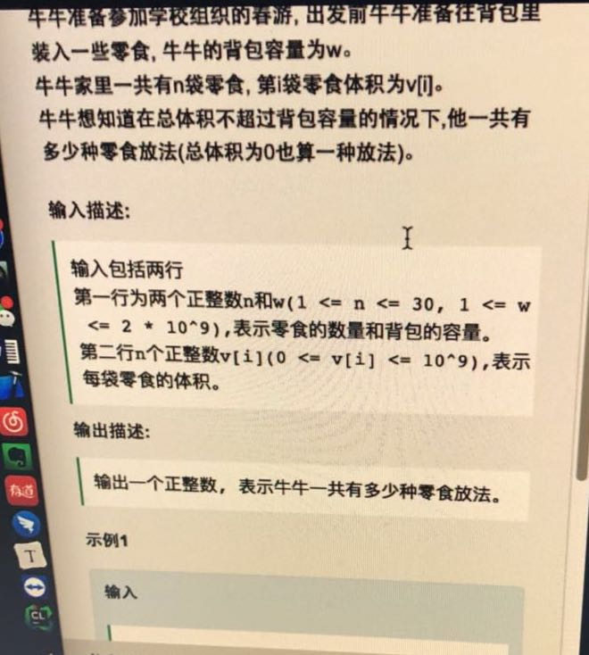
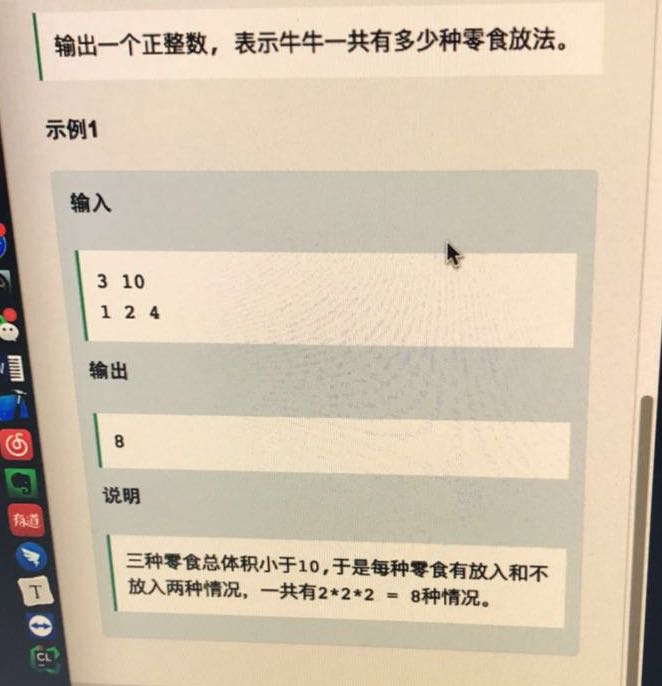
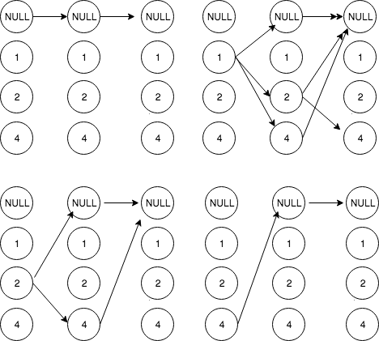
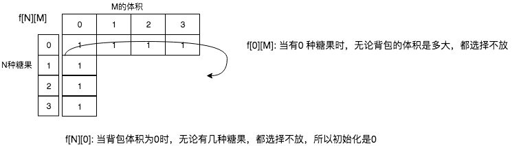

☰ 目录
[网易云cpp, 背包]20180327_找背包问题有多少种方法
题目如下：


对于背包问题，一般重在找递推公式.
先提供一种递归解法：
对于递归方法，我们总能描述其中的关系

int summe(vector<int>& res){
int sum = 0;
for(int val: res)
sum += val;
return sum;
}
void backPack(int start, int m, vector<int>& A,vector<int>& res, int& gg) {
if( summe(res) <= m ) /// 初始化res 是空的，这也是一种解法
gg++;
else
return;
for( int i=start; i< A.size(); i++ ){
res.push_back(A[i]);
backPack(i+1,m,A,res,gg); //// 刚开始这里是start + 1, 这是不对的，因为到了第二个的时候，start还是0，这时候应该是递归2以后的值
res.pop_back();
}
}
int main(){
vector<int> vec{1,2,4};
vector<int> re;
int gg = 0;
backPack(0,10,vec,re,gg);
cout <<gg;
return 0;
}
对于背包问题，我们一般是对于n种物品，体积为w。
举个实际的例子。
V = {1,2,4}, 三种糖果的体积，假如背包容量只有3.
请问放法有多少种。
定一个二维数组， f[n][m], n 代表我有1~ n 种物品，至于放不放，取决于条件。 m 表示当前背包的体积。
我们有如下递推公式：
如果第n种糖果不放，那现在的方法 f[n][m] = f[n-1][m] . 背包的体积没有变化，因为此时也没有放；
如果放了: f[n][m] = f[n-1][m - v[n]] . 因为当前已经放了v[n]的体积，所以糖果树和背包的体积都要相应的缩小。
综上： f[n][m] = f[n-1][m] + f[n-1][m- v[n]]
可以看到 f[n][m] 的值总是依赖于它上一行的结果。所以可以用一个一维数组表示。
f[m] = f[m] + f[m - v[n]]
用循环来实现：
int f[m+1];
for( int i = 0; i<= m; i++ ){
f[i] = 1;
}
for( int i = 1; i<=n; i++ ){
for( int j= m; j >=0; j-- ){
if( m - v[i-1] >=0 ){ /// 当前放的下
f[j] = f[j] + f[m-v[i-1]];
}else /// 一个就装满了，不放
f[j] = f[j];
}
}

使用一维数组的求解如下,注意里面的很多坑。
#include <iostream>
#include <vector>
using namespace std;
int main()
{
int m = 3, n = 3;
int v[3] = {1,2,4};
int f[m+1];
for( int i = 0; i<= m; i++ ){
f[i] = 1;
}
/// 从0 开始，因为下面v[i] 第 0 种物品的体积，是从 0 开始的
for( int i = 0; i< n; i++ ){
for( int j = m; j >= 0; j-- ){
if( j - v[i] >=0 ){ /// 一个就装满了，不放. 注意这里的变量是j，背包每次的容量是j，j 从 0 ~ m 之间依次递增求解
/// 哦，这个值是会改变的，因为我改了前面的 f[j] 值，当后面f[j-v[i]] 可能访问到前面已经被改变的值。
/// 数组必须逆序处理。
f[j] = f[j] + f[j-v[i]]; /// 当前物体容积是v[i],不是v[j]， 然后依次增大背包容量。
}else
f[j] = f[j];
}
}
cout << f[m] << endl;
return 0;
}
>>>
测试结果：
4
使用二维数组的求解情况如下：
#include<iostream>
using namespace std;
int main(){
int n, w;
cin >> n >> w;
int *v = new int[n]();
for (int i = 0; i < n; i++)
cin >> v[i];
long long **dp;
dp = new long long *[n+1]();
for (int k = 0; k <= n; ++k) {
dp[k] = new long long [w+1]();
}
for (int i = 0; i <= n; i++)
dp[i][0] = 1;
for (int i = 0; i <= w; i++)
dp[0][i] = 1;
for (int i = 0; i < n; i++)
for (int j = 0; j <= w; j++) {
dp[i+1][j] = dp[i][j] + dp[i][j-v[i]]; /// 还有不太对的地方，如果容量不太够？ 也就是j - v[i] 出现< 0 的情况？
}
cout << dp[n][w];
delete [] v;
delete [] dp;
return 0;
}